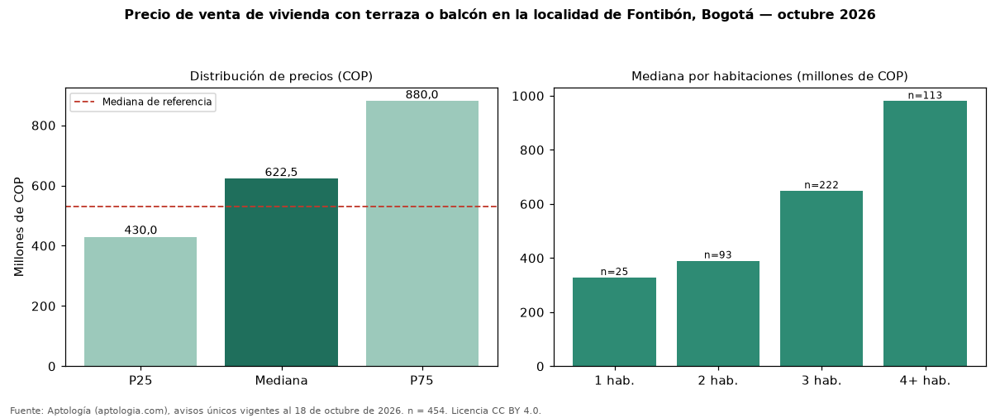

Precio de venta de vivienda con terraza o balcón en la localidad de Fontibón, Bogotá — octubre 2026
COP 622 millones es la mediana de venta de vivienda con terraza o balcón en la localidad de Fontibón, Bogotá, según 454 avisos únicos. Eso es 17 % más que la mediana de toda la oferta de venta en la localidad de Fontibón, Bogotá (COP 530 millones). Frente a los avisos sin terraza ni balcón del mismo grupo (COP 460 millones, n = 1021), la diferencia es de +35 %; por metro cuadrado, +26 %. En todo Bogotá, la misma combinación tiene mediana COP 1,15 mil millones (−46 %). Por metro cuadrado, la mediana es COP 7.275.819/m² (+19 % frente a COP 6.119.403/m²), puesto 7 de 19 localidades comparables. Cruzando con la oferta de arriendo equivalente, la rentabilidad bruta implícita es 7,4 % anual. Por habitaciones: 1 habitación, COP 328 millones (n = 25); 2 habitaciones, COP 390 millones (n = 93); 3 habitaciones, COP 648 millones (n = 222); 4 o más habitaciones, COP 980 millones (n = 113). Datos abiertos CC BY 4.0 de Aptología; fuente y búsqueda de inmuebles: https://www.aptologia.com/venta/bogota/fontibon. Archivos: PDF de 2 páginas, CSV con las cifras y gráfica PNG.

| Avisos únicos | 454 |
|---|---|
| Percentil 25 | COP 430.000.000 |
| Mediana | COP 622.500.000 |
| Percentil 75 | COP 880.000.000 |
| Mediana por m² | COP 7.275.819 |
Fuente: avisos vigentes de portales inmobiliarios recopilados por Aptología, deduplicados (mínimo 30 avisos únicos por celda). Precios pedidos, no cerrados. Fecha: 2026-10-18.